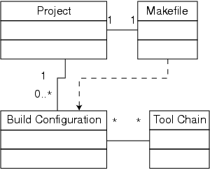

Figure 1: A project can be associated with any number of build configurations. TimeStorm uses the build configuration to create a makefile for the project that is used to invoke the compilation tools necessary to build the project. For convenience, one of the build configurations is the primary or default configuration, so users can just select build for the project and not have to make any further selections.
Back to Article